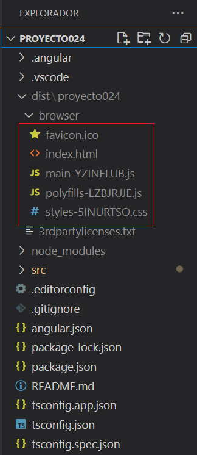

Cuando uno desarrolla una aplicación web utilizando el framework de Angular lo desarrolla y prueba en forma local. Cada cambio que desarrolla lo puede probar en forma local ejecutando el servidor de desarrollo que trae Angular:
f:\angulardevya\proyecto024>ng serve -o
Una vez finalizada la aplicación debemos subirla a nuestro servidor real en Internet, para esto debemos ejecutar el siguiente comando de Angular CLI:
f:\angulardevya\proyecto024>ng build
Luego de este proceso se genera una carpeta llamada 'dist' que contiene todos los archivos que debemos subir a nuestro servidor de Internet:
Los archivos de esta carpeta se deben subir a la carpeta raíz de nuestro servidor de Internet, luego cuando accedemos al dominio de nuestro sitio:
www.misitio.com
El servidor responde devolviendo el archivo 'index.html' y este en su interior tiene todas las referencias a archivos *.js y *.css
<!doctype html> <html lang="en" data-critters-container> <head> <meta charset="utf-8"> <title>Proyecto024</title> <base href="/"> <meta name="viewport" content="width=device-width, initial-scale=1"> <link rel="icon" type="image/x-icon" href="favicon.ico"> <link rel="stylesheet" href="styles-5INURTSO.css"></head> <body> <app-root></app-root> <script src="polyfills-LZBJRJJE.js" type="module"></script><script src="main-YZINELUB.js" type="module"></script></body> </html>
Si nuestra aplicación Angular no se ejecutará en la raíz de nuestro servidor de Internet, el proceso de compilación es diferente.
Por ejemplo si queremos cargar una aplicación Angular a la carpeta:
http://ejerciciostutorialesya.com/angulardev/proyecto024/
El proceso de compilación debe ser:
f:\angulardevya\proyecto024>ng build --base-href=/angulardev/proyecto024/
Una vez construido el proyecto debemos subir todos los archivos a la carpeta /angulardev/proyecto024/ y ya podemos probar la aplicación: aquí